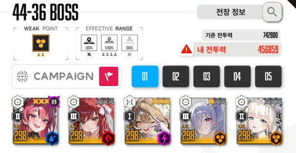
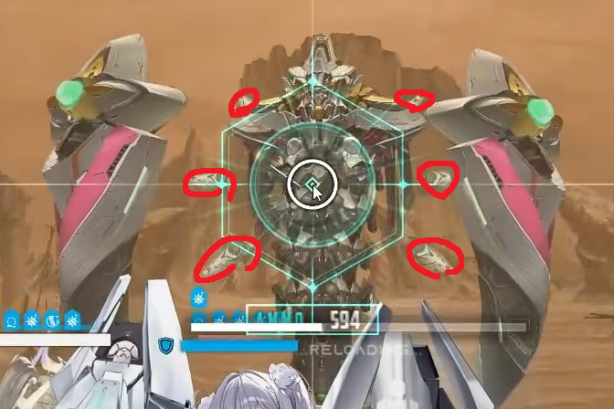
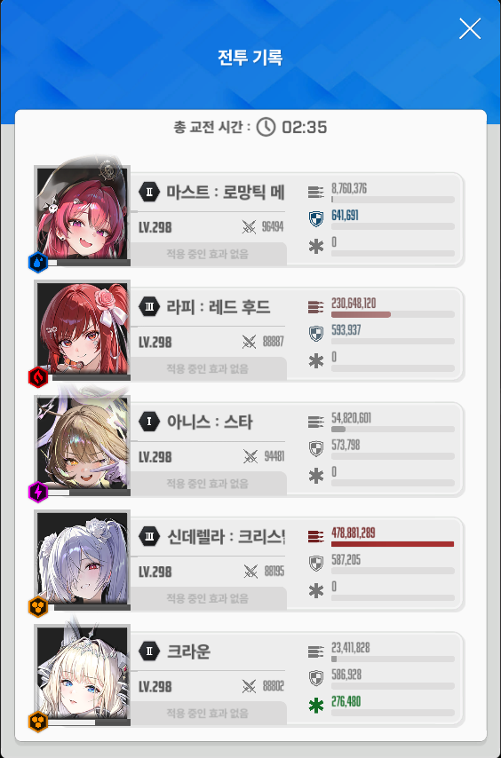

--조합--
아니스 크라운 메스트 라피 수렐루
장비강화 및 옵작은 유튭 설명란 참조
******공략에 들어가기 앞서 설명할 점******
앨트루이아는 개인 태보컨이 무조건 필요한 보스임
최강의 방패때문에 딜타임이 많이 나오지않아 딜을 어떻게 잘 넣어야 하는지 중요함
--패턴--
2분 53초 : 공격력이 가장 높은 니케 1기에게 레이저 발사 ( 만약 대상이 수렐루라면 엄폐 필요 X )
2분 52초~2분 47초 : 5개의 구체가 니케 1기에게 발사됨. 이를 두번 시전
2분 46초 : 속성저지
2분 42초 : 앨트루이아 주위로 파츠 9개 생성 ( 파츠 안부수면 무적 시간 증가 )
2분 26초 : 암전저지
2분 07초 : 최강의 방패 생성 ( 무적 )
2분 03초 : 2분 52초에 발사한 5개의 구체를 총 6번 반복
1분 43초 : 지진파 5번 발생 ( 단체 공격기 )
1분 33초 : 앨트루이아 주위로 파츠 9개 생성 ( 파츠 안부수면 무적 시간 증가 )
1분 16초 : 공격력이 가장 높은 니케 1기에게 레이저 발사
1분 11초 : 최강의 방패 ( 무적 )
1분 08초 : 2분 52초에 발사한 5개의 구체를 총 6번 반복
0분 49초 : 지진파 5번 발생 ( 단체 공격기 )
0분 38초 : 앨트루이아 주위로 파츠 9개 생성 ( 파츠 안부수면 무적 시간 증가 )
이후 반복
각 패턴은 저지를 언제하냐에 따라 달라질 수 있으니 참고 바람
--택틱--
크메크 크크메 크크크 크메
**파츠부숴서 딜 올려야해서 수렐루 스나모드 사용해야함**
처음 들어가서 나오는 레이저는 웬만하면 수렐루가 맞아서 엄폐 필요 X
입장 후 버스트를 바로 키지 말고 레이저가 날라올때 쯤 버스트를 켜서 속성저지까지 버스트를 이끌고 가야함
앨트루이아 주위로 파츠가 생성될 때 밑에서 세번째 파츠가 생성될 쯤 버스트를 키면 수렐루 버스트가 켜질 때 파츠가 다 생성 됨
이후 암전저지에서 메스트 기절이 걸리기 때문에 마지막 저지원에서 시간을 살짝 끌어줌
최강의 방패를 세우기 전에 단체 엄폐를 해서 모든 캐릭터 장전을 해줘 패턴중 장전에 들어가지 않도록 해주기
이후 지진파에서 1틱은 크라운 보호막으로 막고 그 다음 1틱을 몸으로 맞아서 엄폐 2번 아끼기
이후 나오는 최강의 방패 패턴은 동일하게 진행하고 다음 지진파는 1틱을 크라운 보호막, 4틱은 엄폐로 막아주기
이후 수렐루 버스트 쓰면 웬만해선 끝남
--팁--

빨간색 동그라미 친 파츠부분이 머신건과 스나 적정거리임
구체 5개 발사하는 패턴에서 구체가 날라올 때 ESC를 눌러서 확인하면 누구한테 날라오는지 좀 더 명확하게 판단 가능
구체 5개 발사하는 패턴에서 3번자리에서 보는게 좀 더 명확하게 보임
구체 5개 발사하는 패턴 중 처음에 두번 발사하는거는 동일 니케한테 발사되면 두번째 공격은 못피하니 바로 리트누르면 됨
구체 5개 발사하는 패턴을 엄폐할때 구체가 다 지나가면 바로 엄폐를 풀어줘야 다음 구체 어그로가 엄폐쪽으로 안
